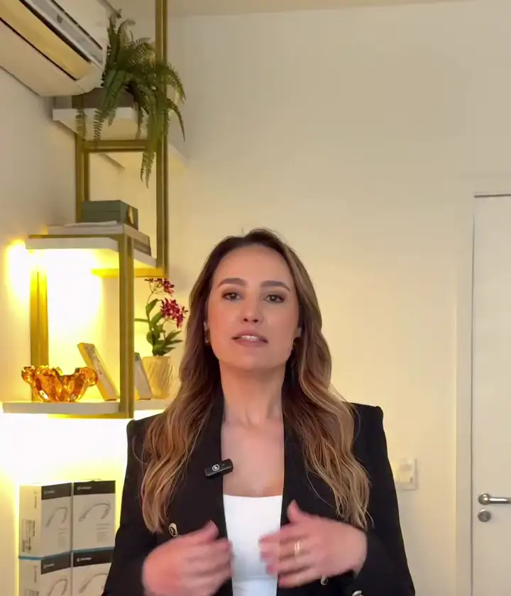
Ortodontia · Invisalign · Harmonização orofacial
Dra. Ana Paula Trombin
Consultório na Av. Romeu Strazzi, 325 · Sala 418 · São José do Rio Preto-SP
Nas palavras dela
Antes de qualquer tratamento, existe uma etapa indispensável: avaliação, planejamento e indicação individualizada.
legenda do vídeo5,0 · 63 avaliações no Google (30/09/2026)
Quer entender quais possibilidades fazem sentido para o seu caso?
Agendar avaliação no WhatsAppPor dentro
O consultório e quem vai cuidar de você.

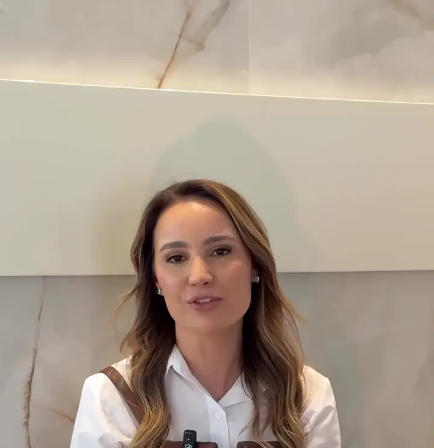

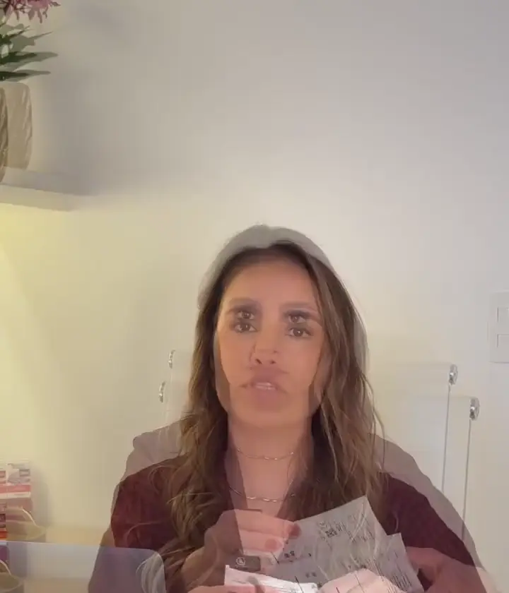

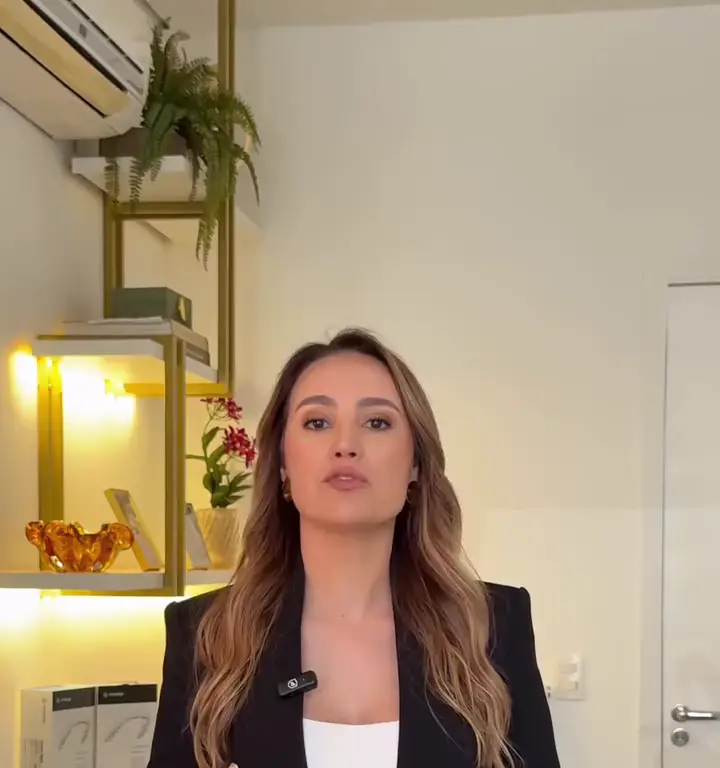
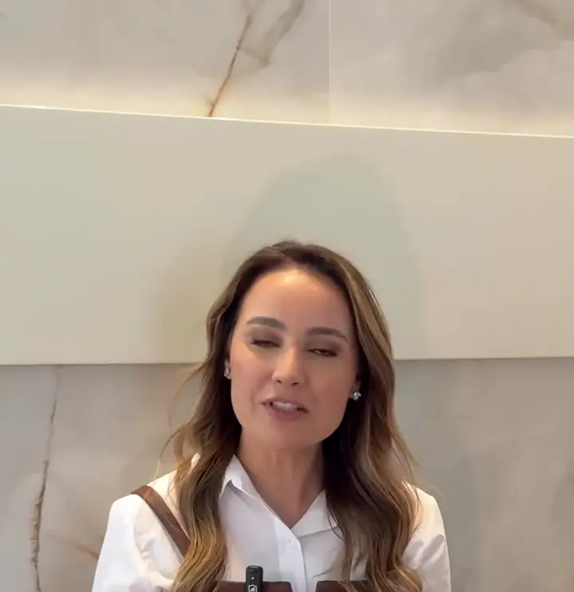
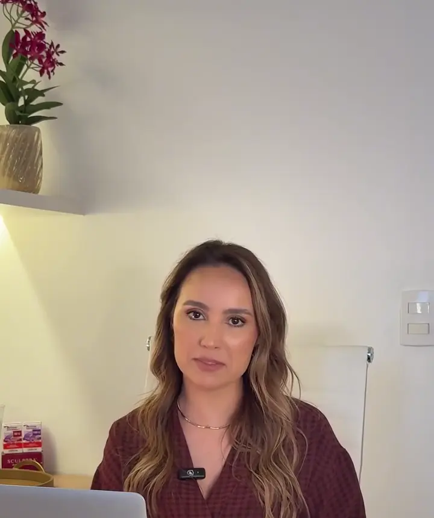
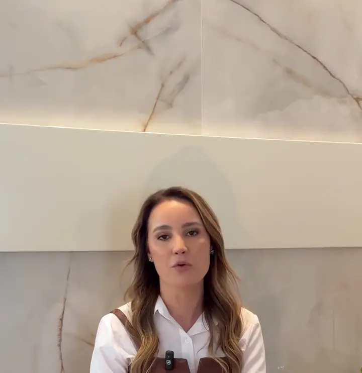
“Sejam muito bem-vindos!”— do vídeo de apresentação, post original

Muito prazer
“Hoje quero me apresentar melhor!”
“Sou a Dra. Ana Paula Trombin e começo este espaço para compartilhar um pouco mais sobre o meu trabalho e principalmente, sobre o cuidado que quero oferecer a cada pessoa que confia em mim.”
“Ortodontia, odontologia, invisalign e harmonização orofacial caminham por aqui com o mesmo propósito: buscar resultados naturais, responsáveis e que façam sentido para cada paciente.”
“A gente sempre começa pelo motivo que trouxe você até meu consultório. Muitas vezes, aquilo que parece ser ‘a solução’ é só a primeira ideia.”
“Meu papel não é simplesmente executar um pedido, mas avaliar, orientar e mostrar com clareza o que realmente pode te trazer um bom resultado.”
“É assim que eu acredito que um tratamento deve ser conduzido: com critério, clareza e responsabilidade.”
Trechos dos posts de apresentação e “Procedimento não vem antes do diagnóstico”.
O que ela responde
Dúvidas que chegam ao consultório.
Cada resposta é um trecho do post dela sobre o tema.
Aparelho não é “coisa de adolescente”?
“Muita gente passou anos acreditando que aparelho era ‘coisa de adolescente’. E acabou adiando um cuidado que poderia fazer diferença não só na estética, mas também na saúde do sorriso.”
post sobre ortodontia na fase adultaUsou aparelho a vida toda e seus dentes entortaram novamente?
“Os dentes continuam sujeitos a movimentações ao longo da vida e é justamente por isso que a contenção e as avaliações periódicas têm um papel tão importante na manutenção do resultado.”
post sobre contençãoCom que idade a criança deve passar por uma avaliação ortodôntica?
“Na infância, uma avaliação ortodôntica por volta dos 5 anos pode ajudar a observar como a mordida, os dentes e a face estão se desenvolvendo, sem significar, necessariamente, que a criança precisará usar aparelho naquele momento.”
post sobre acompanhamentoO Invisalign é só colocar uma placa?
“Não é simplesmente colocar uma placa e esperar o sorriso alinhar. Existe diagnóstico, planejamento, acompanhamento e ajustes de acordo com cada caso.”
post sobre InvisalignMedo da harmonização facial?
“Harmonização facial é muito sobre saber observar. Entender proporções, características, movimentos e necessidades.” “A naturalidade vem do resultado de conhecimento e planejamento.”
post sobre harmonizaçãoNo microagulhamento, quanto mais intenso, melhor?
“Mais profundidade, mais vermelhidão ou até sangramento não significam, necessariamente, que a pele foi melhor tratada.” “Trata-se de saber quanto estimular, onde estimular e como conduzir essa pele depois do procedimento.”
post sobre microagulhamentoProcedimentos em fim de ano: ainda dá tempo?
“Nem todos os procedimentos entregam resultados imediatos. Alguns precisam de dias para acomodação, outros exigem um período de recuperação e há tratamentos cujos efeitos aparecem gradualmente, ao longo de semanas ou meses.” “O resultado que você deseja para dezembro pode precisar começar a ser planejado em novembro.”
post sobre fim de ano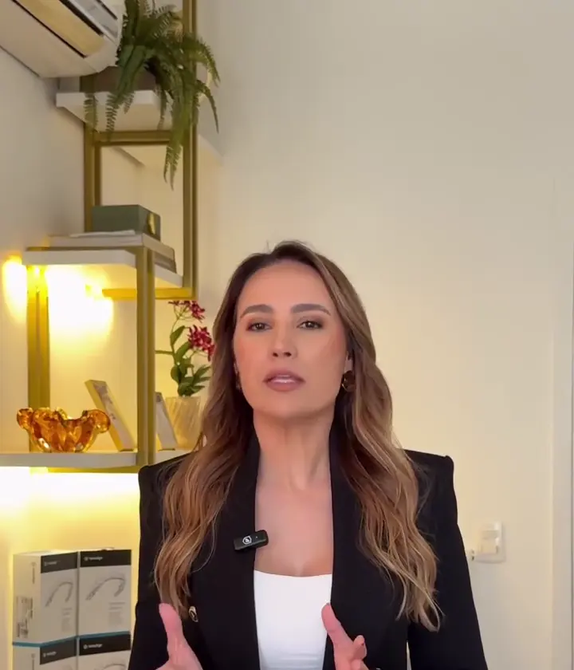
Tecnologia nenhuma substitui diagnóstico.
O que ela trata
Seis cuidados, um mesmo critério.
-
01
Invisalign
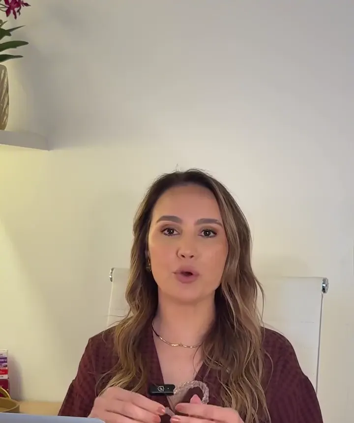
“Parece apenas uma placa transparente, né? Mas existe um tratamento ortodôntico inteiro acontecendo ali.” ver o post
-
02
Ortodontia adulta

“Na fase adulta, a ortodontia pode ajudar a corrigir desalinhamentos, melhorar a mordida (oclusão), facilitar a mastigação, higienização e trazer mais equilíbrio para o sorriso.” ver o post
-
03
Contenção e infância
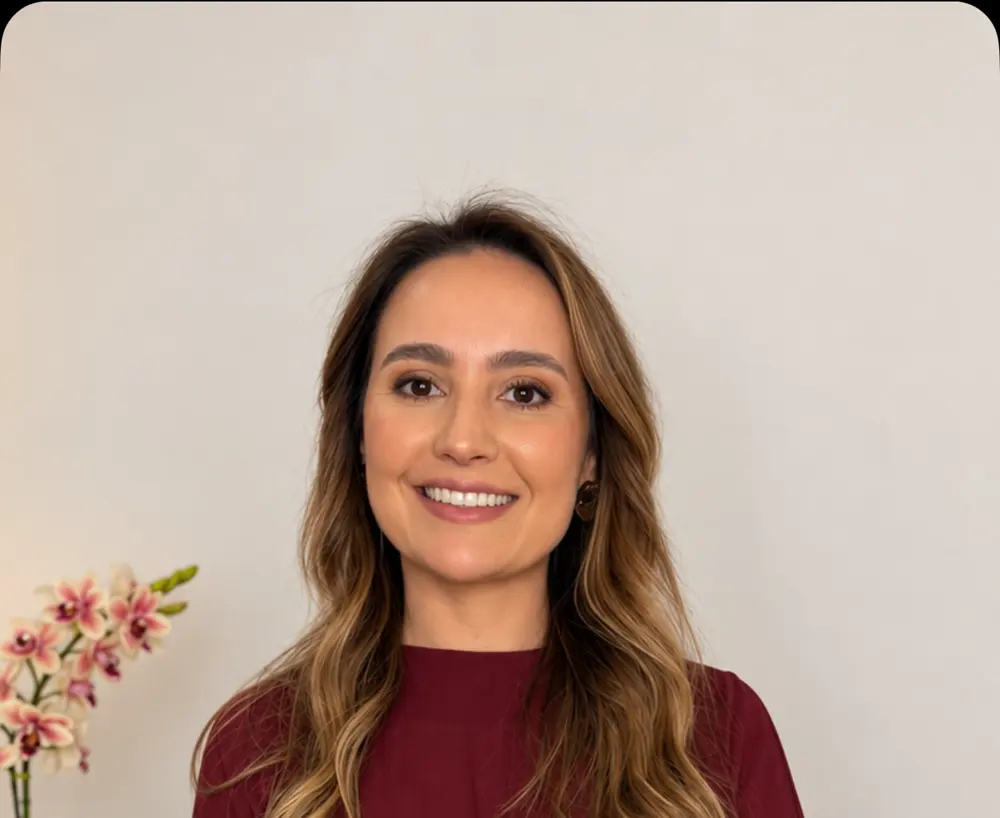
“Na Ortodontia, mais importante do que tratar cedo ou tarde é saber avaliar no momento adequado.” ver o post
-
04
Harmonização facial
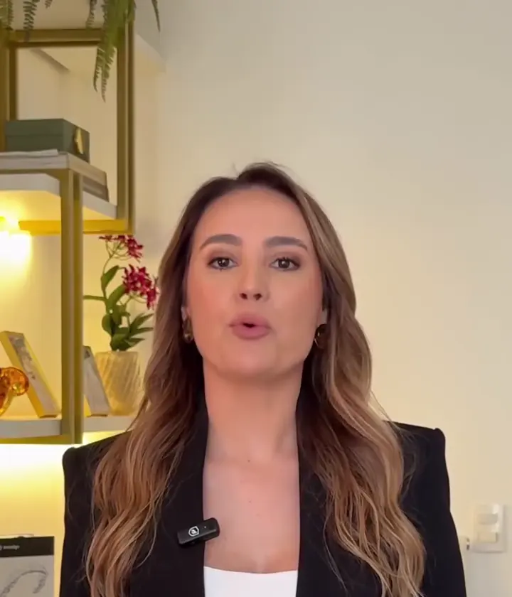
“Antes de qualquer tratamento, existe uma etapa indispensável: avaliação, planejamento e indicação individualizada.” ver o post
-
05
Ultraformer

“Quando existe indicação para trabalhar firmeza e sustentação, o ultrassom focalizado pode ser uma ferramenta importante dentro do planejamento.” ver o post
-
06
Microagulhamento

“O objetivo é provocar um estímulo controlado, capaz de iniciar os processos de reparação e remodelação da pele.” ver o post
No Google
5,0
nota no Google
63
avaliações publicadas no Google
4
frentes de cuidado: ortodontia, odontologia, Invisalign e harmonização orofacial
Nota e número de avaliações medidos em 30/09/2026 · ver no Google Maps · frentes de cuidado: post de apresentação
Como agendar
Agende sua avaliação.
Mande uma mensagem pelo WhatsApp e combine o melhor dia com o consultório.
Agendar pelo WhatsApp Av. Romeu Strazzi, 325 · Sala 418 — Vila SinibaldiSão José do Rio Preto-SP · 15084-010
(17) 99629-9995 · Como chegar · @draanapaulatrombin